Does Echinacea Fight Colds
December/January 2005
During the winter cold season, many people turn to echinacea supplements to boost their immunity and fight off illness. In 2004, a U.S. government survey found that echinacea was the nation’s most popular herbal medicine, used by 40 percent of those who bought herbal products.
But echinacea’s effectiveness was called into question last July, when the New England Journal of Medicine published the results of a large clinical trial that found the herb did not help treat or prevent colds. The study, funded by the National Center for Complementary and Alternative Medicine (NCCAM), made headlines across the country, most of them declaring the end of echinacea as a cold remedy.
Does that mean you should throw away the echinacea in your medicine cabinet Not so fast, says Mark Blumenthal, executive director of the American Botanical Council (ABC), a nonprofit organization that promotes research and education on medicinal plants.
“The study was well conducted; it was very well controlled, but this is not the definitive study,” Blumenthal says. “It needs to be seen in the context of the many other trials of echinacea.” The ABC, which publishes in-depth reference information on medicinal herbs, has posted research on echinacea at www.herbalgram.org. Among the 21 studies listed, 18 found positive results, with three finding no significant effects.
As the researchers themselves noted in the NCCAM study, it’s difficult to prove or disprove that echinacea fights colds because so many forms of the herb are used. Commonly called purple coneflower, echinacea is a genus with three different species that are used medicinally-Echinacea purpurea, E. pallida, and E. angustifolia. Medicinal preparations may contain either the root or the aboveground portion of the plant from any of these species, and they may be prepared as dried herbs available in capsules, liquid extract sold as a tincture, or even dried extracts. Even the geographic location of the plant and the time of year it was harvested can affect its chemical composition, according to the researchers who conducted the NCCAM study.
For that trial, the researchers used a tincture of E. angustifolia root three times a day in dosages that were equivalent to 300 milligrams. The trial was conducted on 437 college students who were given cold viruses and then sequestered in hotel rooms. Those given extracts of E. angustifolia did not display any fewer infections or shorter duration of the cold symptoms than those who did not receive the herb; and the extracts were not any more effective when given before exposure to the virus than they were in reducing its effects.
One of the study’s co-authors, Dr. Rudolf Bauer, told The New York Times that different dosages, species and preparations of echinacea should be tested, and that he personally will continue to take echinacea.
Blumenthal says that while this study provides useful information about this preparation of E. angustifolia at that particular dosage, he thinks the dosage tested should have been higher.
The 900 milligrams-per-day level was determined according to the echinacea guidelines published for a different species (E. pallida) by Commission E-a German government committee that compiled a widely used reference. But more recent standards, including those set by the World Health Organization and the Canadian National Health Products Directorate, recommend a dosage level of 3,000 milligrams a day.
“The whole thing is about dosage,” Blumenthal says. “It’s like taking one-third of an aspirin and wondering why you still have a headache.”
Blumenthal’s advice is to take echinacea the same way he does. As soon as he notices cold symptoms, Blumenthal takes a tincture of immune-boosting herbs including echinacea, astragalus, andrographis and elderberry syrup, about two droppersful every two to four hours for two days. “I take big doses right away, and usually within 24 to 36 hours, I have it knocked out.”
- Megan Phelps
sprouts & snippets
Free Birds
More U.S. businesses and universities are joining the campaign to discontinue the purchase of eggs from caged chickens. In 2005, natural food retail chains such as Earth Fare, Jimbo’s…Naturally and Wild Oats Natural Marketplace announced that they would no longer sell eggs from caged hens. Several universities, including George Washington University, the University of Arizona and the University of Connecticut, also have stopped purchasing eggs laid by chickens confined in cages. For more information about this campaign, organized by the Humane Society of the United States, go to www.hsus.org.
Bike Funding
The new federal transportation bill will help make bicycling safer, more convenient and more fun for all Americans. It authorizes as much as $4 billion in new federal spending for bike paths, trails and related programs through September 2009. The law includes close to $2 billion for new bike paths, lanes and safe crossings; $612 million for construction of safe routes to schools; $70 million for recreational trails; and $100 million to develop bicycle/pedestrian communities in a handful of cities. “This transportation bill should be at least $1 billion better for bicycling than the last bill that passed in 1998,” says Tim Blumenthal, executive director of the Bikes Belong Coalition, a national bicycle industry advocacy group that was instrumental in maximizing bike funding in this bill. For more information, go to www.americabikes.org.
Hurricane Relief
Whole Foods Market, one of the nation’s largest natural food retailers, provided a month-long pay continuation and $2,400 relocation assistance for all of its New Orleans-area employees after Hurricane Katrina struck last August. The company also gave food to victims in New Orleans and set up hurricane-relief donation activities in all of its stores. Whole Foods CEO John Mackey says the company will match 100 percent of its customers’ donations, up to $1 million. For more information, visit www.wholefoodsmarket.com.
Global Warming and Hurricanes
In the wake of last summer’s hurricanes, many have wondered if global warming caused or contributed to these devastating storms.
“Scientific evidence suggests there is a link between global warming and the power, not frequency, of hurricanes,” says Brenda Ekwurzel, a climate scientist with the Union of Concerned Scientists.
Rising global temperatures have increased ocean temperatures, and warmer water amplifies the intensity of hurricanes. Last August, Hurricane Katrina left Florida as a Category 1 hurricane with winds up to 95 mph and then weakened to a mild tropical storm. But as Katrina moved through the warmer waters of the Gulf of Mexico, it transformed into a Category 5 hurricane, with winds up to 175 mph (shown above).
Three weeks later, Hurricane Rita entered the Gulf and in two days went from Category 1 to Category 5. In October, Hurricane Wilma became the most powerful storm ever recorded in the Atlantic Ocean basin.
Ekwurzel says it’s hard to blame any one weather event-be it a hurricane, a heat wave or a blizzard-on global warming, but recent research from the Massachusetts Institute of Technology (MIT) shows that the duration and wind speed of hurricanes have significantly increased over the last 30 years. Another study from the Georgia Institute of Technology found that the number of Category 4 and 5 hurricanes has doubled in the last 30 years, parallel to increases in average ocean surface temperatures over the same period. Most of the strongest hurricanes on record have occurred in the last decade, when ocean surface temperatures reached record levels.
MIT research also suggests that hurricanes will only get more powerful and last longer as global warming increases ocean temperatures.
“In addition, as oceans warm and glaciers melt, sea levels will continue to rise,” Ekwurzel says. “Higher sea levels mean bigger storm surges, even from minor storms, causing coastal flooding, erosion and property damage.”
Global warming is primarily the result of carbon dioxide and other greenhouse gases-produced by the burning of fossil fuels in cars and power plants-that blanket the Earth and trap heat. Because 75 percent of the Earth is covered by oceans, they absorb most of this heat. Temperatures already have risen in recent decades, and because greenhouse gases can stay in the atmosphere for 100 or more years, temperatures will continue to rise even if emissions are held at current levels.
“For economic and environmental reasons, and above all to save human lives, President Bush and other elected officials must take action to reduce heat-trapping emissions,” Ekwurzel says.
Solutions to combat global warming and the climate disruption it causes, according to Ekwurzel, include encouraging automakers to design more fuel-efficient cars, requiring more of our energy to come from renewable sources, establishing a federal cap on emissions and requiring more energy efficiency in public and private buildings. “Hurricanes Katrina and Rita have shown us that the time for studies, denials and false debate is over,” she says. For more information on this topic, go to www.ucsusa.org and click on “Global Warming.”
-Luke Warren,
Union of Concerned Scientists
Mother’s Green Gift Guide
Kitchen
Handmade Pie Plate
Missouri potter Tom Hess forms each pie plate by hand from natural red clay. Pies come out evenly baked and perfectly crisp in these ovenproof, dishwasher- and microwave-safe plates. $26; Hess Pottery; (417) 272-3283; www.hesspottery.com
Garden
Cobra Head Weeder
A multipurpose garden tool, the Cobra Head weeds, cultivates and transplants with ease. The handle’s design accommodates both right- and left-handed gardeners. $24.95; Cobra Head; (866) 962-6272; www.cobrahead.com
Home
Organic Cotton Sheets
Organically grown cotton woven into a 250-thread-count sateen bedding makes a truly luxurious gift. $100 to $149; Viva Terra; (800) 233-6011; www.vivaterra.com
Super Solar Screen
Reduces cooling costs and creates privacy.
These heat-blocking screens can be attached to regular screen frames on windows, greenhouses and doors. 36” x 84”; $24; Real Goods; (800) 869-3446; www.realgoods.com
Herbal Gift Basket
A selection of soaps, incense, smudge sticks and jam all made from sustainably harvested plants of the American West. $32 to $60; Juniper Ridge; (800) 205-9499; www.juniperridge.com
Compact Fluorescent Light (CFL) Bulbs
CFLs use one-third of the energy and last up to 10 times longer than conventional bulbs. Replacing five incandescent bulbs with Energy Star-rated CFLs can help save up to 50 percent of a household’s annual lighting bill. $3 to $24; Energy Federation; www.energyfederation.org
Gadgets
Cell Phone Chargers
With the Sidewinder (bottom), two minutes of cranking delivers five to six minutes of talk time or up to 30 minutes on standby. $25. The solar E-power Charger is a pocket-size, folding solar charger for phones and batteries. $69. Both from Real Goods; (800) 869-3446; www.realgoods.com
Tools
French Opinel Knife
This classic, low-cost folding knife features a wooden handle and a stainless steel blade. $8 to $10; Johnny’s Selected Seeds; (877) 564-6697; www.johnnyseeds.com
15-in-one Screwdriver
This is the best multibit screwdriver we’ve ever seen.
A cartridge slides neatly out of the handle, making it easy to choose the bit you need. $17; Lee Valley Tools; (800) 871-8158; www.leevalley.com
Outdoor
Tent Hammock
Ideal for campers and hikers who enjoy traveling light. Easy to set up, it features a bug net and rain guard. Rain catchment attachments also available. $79.95 to $199.95; Hennessy Hammock; (888) 539-2930; www.hennessyhammock.com
Retractable Clothesline
Save energy with this easy-to-install clothesline for indoor or outdoor use. Extends up to 40 feet. $20; Real Goods; (800) 869-3446; www.realgoods.com
Bat House
With room for up to 40 bats, this will welcome the world’s best mosquito control to any back yard. $50; Real Goods; (800) 869-3446; www.realgoods.com
Charity
Donations also make excellent holiday gifts.
Green Hurricane Relief Programs
Many nonprofit groups are focusing their energies on repairing the environmental damage of Hurricanes Katrina and Rita, as well as helping affected pets and wildlife:
The Humane Society of the United States, www.hsus.org; Environmental Defense, www.environmentaldefense.org; Wildlife Conservation Society, www.wcs.org; American Forests, www.americanforests.org; Trust for Public Land, www.tpl.org
Adopt an Animal
A friend or child will enjoy these programs devoted to saving endangered species. They offer personalized ways to get to know-and make a difference for-otters, owls, tigers, wolves, whales and more. Starts at $25; Defenders of Wildlife, (800) 385-9712, www.wildlifeadoption.org; Smithsonian National Zoological Park, www.nationalzoo.si.edu/support/adoptspecies
Pets
For Cats
Even the most finicky feline will take to this horizontal scratcher that’s made of recycled cardboard and sprinkled with organic catnip. $10 to $17; for retail outlets, call (800) 967-5394 or go to www.worldwise.com/storelocator.html
For Dogs
Dogs would be happy with anything (even an old shoe!), but this fluffy fleece bed is sure to be a hit among our most loyal friends. $15 to $40; for retail outlets, call (800) 967-5394 or go to www.worldwise.com/storelocator.html
Kids
Bamboo Skateboards
A more sustainable option than mature hardwoods. The manufacturer says bamboo boards are lighter yet stronger than conventional boards. $55 (deck only), www.bambooskateboards.com
-Mother Earth News Editors
Following a Peregrine Falcon
In the 1980s, On the Wing author Alan Tennant volunteered with a team of biologists striving to shed light on the mysteries and dangers surrounding peregrine falcons’ transcontinental migrations from their breeding territories north of the Arctic Circle to their wintering grounds on South Padre Island, and back again.
Written from the perspective of a passionate naturalist and romantic idealist, Tennant’s On the Wing relates his obsession with trying to follow a migrating falcon, a feat never attempted before. To accomplish his quest, he enlisted the help of George Vose, a 70-year-old ex-World War II fighter pilot and Vose’s almost-as-ancient, rattletrap, single-engine Cessna plane.

On the Wing: To the Edge of the Earth with the Peregrine Falcon. By Alan Tennant (Knopf, 2004)
An inveterate and accomplished aviator, Vose had been hired by the U.S. Army to radio-track the short-term movements of peregrines as they left South Padre Island. It was during one of these tracking flights that Tennant, onboard to observe, grew frustrated with the Army’s limited research goals and began to hatch a plot to follow a falcon all the way home. A self-proclaimed outlaw, Tennant “borrowed” the Army’s sophisticated tracking equipment and, together with Vose, began a multiyear transcontinental odyssey of enlightenment and concern over the plight of peregrine falcons, which are the fastest animals on the planet.
As a current member of the Padre Island Peregrine Falcon Survey team, I am struck by the author’s vivid portrayal of the stark beauty and unique natural history of South Padre Island and its importance as a refuge for peregrines, as well as for hundreds of other migrating bird species. In captivating narrative, Tennant describes the landscapes and habitats, the wonders and the perils encountered by peregrines along their migration routes-scenes that I have often imagined after releasing a freshly banded falcon to continue on its way.
Unfortunately, Tennant exercises literary license with some of the facts, such as the portrayal of Prescott Ward, a biologist who took exception to Tennant’s unauthorized and illegal activities. Tennant did not have the proper training or the necessary permits required to work with peregrines, and his actions put the whole project at risk of being shut down. Still, his concern for the species is sincere.
Though the peregrine falcon has recovered from the brink of extinction, there still are threats such as rampant coastal development and the spread of the West Nile Virus and Avian Influenza. The public’s fascination with peregrines and concern for their welfare remains as passionate today as when Tennant and Vose undertook their own epic migrations.
More than just a superb account of natural history, On the Wing is part exotic travelogue, part epic adventure saga, part coming-of-middle-age chronicle and part buddy story. Tennant’s tale is wondrous, suspenseful, hilarious and introspective. It is a book that crosses many genres and should appeal to a wide variety of readers.
- Brian Latta
Brian Latta is a field biologist for the Predatory Bird Research Group at the University of California at Santa Cruz, working primarily with peregrine falcon recovery. He’s also a member of the Padre Island Peregrine Falcon Survey team, which has studied peregrine migration since 1993.
|
Commonly called purple coneflower, echinacea is used in medicinal preparations for treatment of colds |
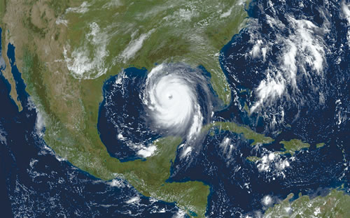 On the Wing: To the Edge of the Earth with the Peregrine Falcon. By Alan Tennant (Knopf, 2004) |
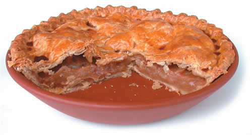 |
|
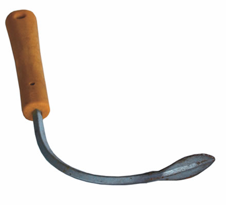 |
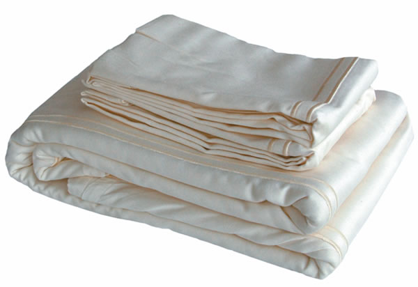 |
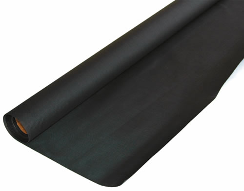 |
|
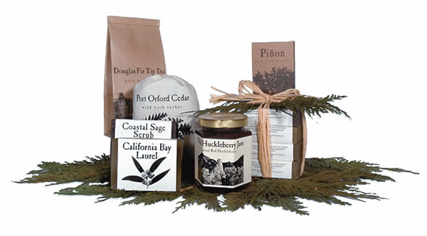 |
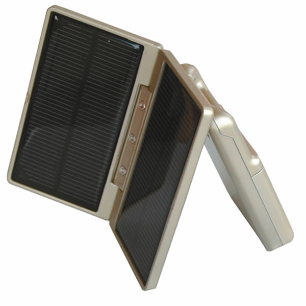 |
|
|
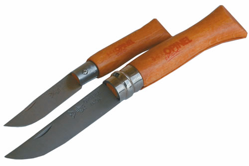 |
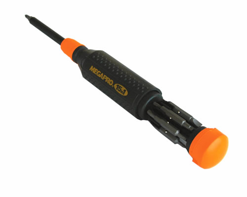 |
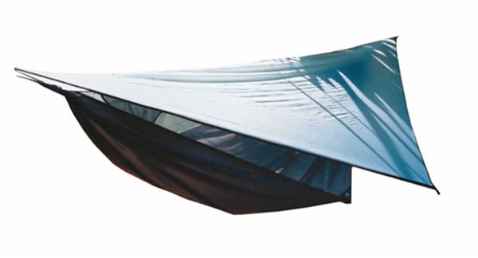 |
|
|
|
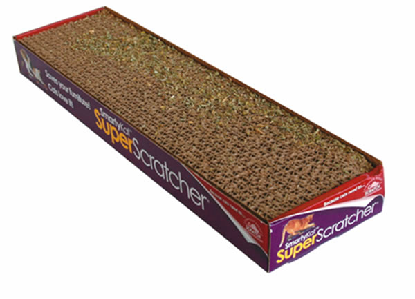 |
|
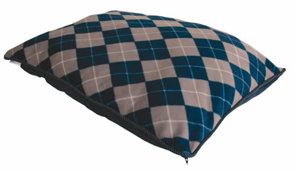 |
 |
|